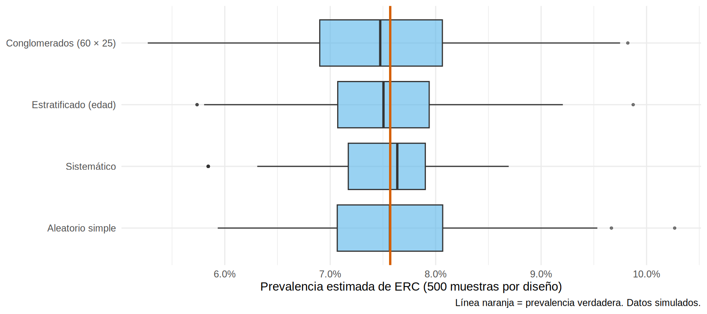

library(tidyverse)
source("R/simular_encuesta_erc.R")
pob <- simular_poblacion_erc()
N <- nrow(pob); n <- 1500
pob <- pob |>
mutate(gedad = cut(edad, c(17, 39, 59, 100), labels = c("18-39", "40-59", "60+")),
tam = ave(erc, cluster, FUN = length)) # tamaño de la comunidad (marco)
## Cada función devuelve la muestra con una columna `peso` = inversa de la probabilidad de selección
## (1 en los diseños donde todos tienen igual probabilidad).
## 1. Aleatorio simple
muestra_mas <- function() slice_sample(pob, n = n) |> mutate(peso = 1)
## 2. Sistemático: un punto de partida al azar y 1 de cada k
muestra_sis <- function() {
k <- floor(N / n); inicio <- sample(k, 1)
pob[seq(inicio, N, by = k), ] |> mutate(peso = 1)
}
## 3. Estratificado proporcional (por grupo de edad)
muestra_estrat <- function() {
pob |> group_by(gedad) |> slice_sample(prop = n / N) |> ungroup() |> mutate(peso = 1)
}
## 4. Por conglomerados (en dos etapas): 60 comunidades y 25 adultos en cada una
muestra_cong <- function(n_cl = 60, por_cl = 25) {
ids <- sample(unique(pob$cluster), n_cl)
pob |> filter(cluster %in% ids) |> group_by(cluster) |> slice_sample(n = por_cl) |> ungroup() |>
mutate(peso = (n_distinct(pob$cluster) / n_cl) * tam / por_cl) # (1 / prob. de la comunidad) x (1 / prob. dentro de ella)
}Diseños de muestreo
Probabilística o no probabilística
En un muestreo probabilístico cada persona de la población tiene una probabilidad conocida y mayor que cero de ser elegida. Eso permite calcular el error y estimar sin sesgo. En uno no probabilístico (conveniencia, bola de nieve, “los que vienen a consulta”) no se conocen esas probabilidades y no se puede cuantificar el sesgo.
| Diseño | Cómo se elige | Cuándo conviene |
|---|---|---|
| Aleatorio simple (MAS) | Sorteo directo del listado | Hay un listado completo y pequeño |
| Sistemático | Un punto al azar y luego 1 de cada k | Listado ordenado (registro de diálisis) |
| Estratificado | MAS dentro de grupos (estratos) | Grupos con distinta frecuencia; asegurar subgrupos pequeños |
| Por conglomerados | Se sortean grupos y se miden todos (o parte) | No hay listado de personas, pero sí de comunidades, hospitales, unidades |
| Bietápico / polietápico | Conglomerados y luego personas dentro | Encuestas nacionales (ENSANUT, NHANES) |
Cómo se hace en R
Con dplyr, cada diseño es una pequeña función. Trabajamos con la región simulada (pob) y un tamaño de muestra de 1 500 adultos.
En el diseño por conglomerados, un adulto de una comunidad pequeña tiene más probabilidad de salir (se eligen 25 de pocos) que uno de una comunidad grande. Para estimar sin sesgo hay que ponderar por peso; por eso todas las funciones devuelven esa columna.
Tip💡 Tip práctico: reproducibilidad
Siempre fija la semilla (set.seed()) antes de sortear y guarda las IDs sorteadas. Así cualquiera puede reproducir tu muestra y auditar el sorteo.
¿Qué diseño estima mejor? Experimento de muestreo repetido
Como conocemos la población completa, podemos sacar 500 muestras de cada diseño y ver (a) si el estimador cae en promedio sobre la verdad y (b) cuánto varía de una muestra a otra.
set.seed(1)
reps <- 500
prev_verdadera <- mean(pob$erc)
estimar <- function(f) replicate(reps, { m <- f(); weighted.mean(m$erc, m$peso) })
resultados <- tibble(
diseno = c("Aleatorio simple", "Sistemático", "Estratificado (edad)", "Conglomerados (60 × 25)"),
est = list(estimar(muestra_mas), estimar(muestra_sis), estimar(muestra_estrat), estimar(muestra_cong))
)
## Error estándar teórico de una MAS del mismo tamaño: referencia para el efecto de diseño
ee_mas <- sqrt(prev_verdadera * (1 - prev_verdadera) / n * (1 - n / N))
resumen <- resultados |>
mutate(media = map_dbl(est, mean), desv_est = map_dbl(est, sd)) |>
select(diseno, media, desv_est) |>
mutate(sesgo = media - prev_verdadera,
efecto_diseno = (desv_est / ee_mas)^2)
resumen |> mutate(across(c(media, desv_est, sesgo), \(x) round(100 * x, 2)),
efecto_diseno = round(efecto_diseno, 2))# A tibble: 4 × 5
diseno media desv_est sesgo efecto_diseno
<chr> <dbl> <dbl> <dbl> <dbl>
1 Aleatorio simple 7.62 0.71 0.05 1.1
2 Sistemático 7.54 0.55 -0.03 0.66
3 Estratificado (edad) 7.54 0.68 -0.02 1.02
4 Conglomerados (60 × 25) 7.49 0.8 -0.08 1.42En porcentaje (la prevalencia verdadera es 7.57 %):
resultados |>
unnest(est) |>
mutate(diseno = factor(diseno, levels = resultados$diseno)) |>
ggplot(aes(est, diseno)) +
geom_boxplot(fill = "#56B4E9", alpha = 0.6, outlier.size = 0.8) +
geom_vline(xintercept = prev_verdadera, color = "#D55E00", linewidth = 1) +
scale_x_continuous(labels = scales::percent_format(accuracy = 0.1)) +
labs(x = "Prevalencia estimada de ERC (500 muestras por diseño)", y = NULL,
caption = "Línea naranja = prevalencia verdadera. Datos simulados.") +
theme_minimal(base_size = 11)
Lo que enseña el experimento:
- Todos los diseños probabilísticos son aproximadamente insesgados: la media de las estimaciones cae sobre la verdad.
- Estratificar por una variable relacionada con el desenlace (aquí la edad: la prevalencia pasa de 3 % a 16 % entre los grupos extremos) reduce el error respecto de la MAS (aquí modestamente; la ganancia crece cuanto más difiera el desenlace entre estratos). Si el estrato no se relaciona con el desenlace, no se gana nada.
- Los conglomerados aumentan el error: medir 25 vecinos de la misma comunidad aporta menos información que medir 25 personas distintas. Se hace por logística y costo, y se paga con una muestra efectiva menor.
- El sistemático se comporta aquí mejor que la MAS porque el listado está ordenado por conglomerado (equivale a estratificar sin querer). Cuidado: si el listado tiene un patrón periódico que coincide con k (por ejemplo, una cita cada 7 días con turno fijo), el sistemático puede sesgar.
Estratificar: proporcional o desproporcionado
- Proporcional: cada estrato aporta a la muestra en proporción a su tamaño. Mejora la precisión y no requiere ponderar.
- Desproporcionado (sobremuestreo): se toman más personas de un grupo pequeño de interés (zona rural, pacientes en diálisis, personas mayores de 80) para tener precisión dentro de ese grupo. El costo es que las personas ya no tienen la misma probabilidad de selección, y el análisis debe usar pesos (6.3).
Ejemplo: la zona rural es solo el 29 % de los adultos. Con 1 500 personas en MAS, ¿cuántas rurales esperamos? Unas 430. Si queremos comparar urbano y rural, reservamos 750 y 750:
# A tibble: 2 × 4
area n proporcion esperados_en_1500
<chr> <int> <dbl> <dbl>
1 Rural 21564 0.286 430
2 Urbano 53743 0.714 1070muestra_desprop <- pob |> group_by(area) |> slice_sample(n = 750) |> ungroup()
count(muestra_desprop, area)# A tibble: 2 × 2
area n
<chr> <int>
1 Rural 750
2 Urbano 750# A tibble: 2 × 4
area N_h n_h peso
<chr> <int> <dbl> <dbl>
1 Rural 21564 750 28.8
2 Urbano 53743 750 71.7Cada persona rural “representa” a 29 adultos; cada persona urbana, a 72. Estos son los pesos de muestreo.
Conglomerados: efecto de diseño y correlación intraclase
Personas de la misma comunidad se parecen entre sí (mismo acceso a salud, dieta, exposiciones). Esa semejanza se mide con el coeficiente de correlación intraclase (ICC, \(\rho\)). Con conglomerados de tamaño promedio \(\bar m\), el efecto de diseño (deff) es:
\[ \text{deff} \approx 1 + (\bar m - 1)\,\rho \]
Es el factor por el que se multiplica la varianza respecto de una MAS del mismo tamaño. El tamaño de muestra efectivo es \(n_{ef} = n/\text{deff}\).
## ICC aproximado con análisis de varianza de un factor (ERC como 0/1)
a <- aov(erc ~ factor(cluster), data = pob)
ms <- summary(a)[[1]]$`Mean Sq`
m_prom <- mean(table(pob$cluster))
icc <- (ms[1] - ms[2]) / (ms[1] + (m_prom - 1) * ms[2])
deff_teorico <- 1 + (25 - 1) * icc
c(icc = icc, deff_con_25_por_comunidad = deff_teorico, n_efectivo = n / deff_teorico) icc deff_con_25_por_comunidad n_efectivo
0.02634444 1.63226656 918.96755033 ## efecto de diseño observado en el experimento (con su propio error de simulación)
resumen |> filter(str_detect(diseno, "Conglomerados")) |> pull(efecto_diseno)[1] 1.415651Un ICC de apenas 0.026 parece insignificante, pero con 25 personas por conglomerado el deff ronda 1.6: las 1 500 personas valen como unas 919. Cuantas más personas por conglomerado, mayor el costo estadístico; suele ser mejor más conglomerados con menos personas cada uno.
Advertencia⚠️ Los datos agrupados no son independientes
Importante🎯 En resumen
- Solo el muestreo probabilístico permite estimar sin sesgo y cuantificar el error.
- Estratifica por variables relacionadas con el desenlace (más precisión) o para asegurar subgrupos pequeños (sobremuestreo, que exige pesos).
- Los conglomerados abaratan el trabajo de campo pero aumentan la varianza: deff = 1 + (m − 1)ρ.
- Un listado ordenado y un sistemático pueden coincidir con un patrón periódico: revisa el orden.
- Escribe el diseño como código reproducible con semilla.
Ejercicio
- Calcula el deff teórico si se midieran 10 personas por comunidad en lugar de 25 (
1 + (10 − 1) * icc). Con 150 comunidades (también 1 500 personas), ¿mejora la precisión? - Haz un diseño estratificado por área con 300 urbanos y 1 200 rurales y verifica que, sin pesos, la prevalencia estimada está sesgada. Corrígela con los pesos N_h/n_h.
- Escribe un muestreo sistemático donde el listado esté ordenado por edad. ¿Qué ventaja da ordenar así?